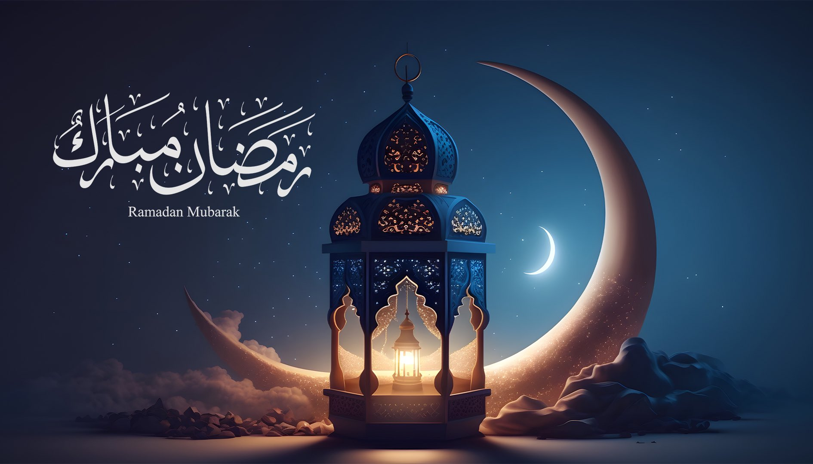

Ramadan: A Time for Reflection, Connection, and Unity
March 5, 2025
Ramadan is more than just a month of fasting; it's a transformative journey that invites us to reflect, reconnect, and renew our commitment to becoming better versions of ourselves. It's a time to break free from bad habits, strengthen our bonds with one another, and extend compassion to all of humanity—especially during these times of division and conflict.
Breaking Bad Habits
One of the most profound aspects of Ramadan is its ability to help us break free from the habits that hold us back. By abstaining from food, drink, and other distractions from dawn to sunset, we train ourselves to exercise self-discipline and self-control. This practice isn't just about physical restraint; it's about confronting our inner struggles—whether it's anger, impatience, or unhealthy routines—and replacing them with patience, gratitude, and mindfulness.
Ramadan teaches us that change doesn't have to happen overnight. Just as we gradually adjust to fasting, we can take small, consistent steps to overcome our shortcomings. For me, this meant sticking to my gym and programming routines even during Ramadan. After Iftar, I dedicated time to lifting weights and coding, proving that discipline in one area of life can spill over into others. Usually by the end of the month, I found that I had not only broken bad habits but also cultivated new, positive ones that stayed with me long after Ramadan ended.
Strengthening Community Bonds
Ramadan is also a time of unity. From shared Iftar meals to nightly prayers, the month brings people closer in ways that transcend our differences. It's a reminder that we're all part of a larger community, bound by shared values and a common purpose. Breaking bread together after a day of fasting fosters a sense of unity and belonging that is deeply healing, especially in a world that often feels divided.
This sense of connection extends beyond our immediate circles. Ramadan encourages us to reach out to those who are lonely, struggling, or in need. It's a time to open our doors and our hearts, to share what we have, and to remind one another that no one is truly alone.
A Time for Peace and Compassion
In a world marred by violence and conflict, Ramadan's message of peace and compassion feels more urgent than ever. This month calls on us to look beyond our differences—whether religious, cultural, or political—and see the humanity in one another. It's a time to stand in solidarity with all our brothers and sisters, regardless of their faith or background.
As Muslims, we are reminded during Ramadan to care for our neighbors, whether they are Muslim, Christian, Jewish, or of any other faith. This spirit of inclusivity and generosity is at the heart of Ramadan. It's a time to reflect on how we can contribute to a more just and compassionate world, one small act of kindness at a time.
Renewing Our Commitment to Humanity
Ramadan is not just about personal growth; it's about collective renewal. It's a time to recommit ourselves to the values of empathy, justice, and love for all of humanity. As we fast and pray, we are reminded of our shared responsibility to care for one another and to work toward a world where everyone can live in dignity and peace.
This Ramadan, let's use this sacred time to reflect on how we can be a source of light and hope in a world that desperately needs it. Let's break bread with our neighbors, extend a hand to those in need, and strive to build bridges of understanding and compassion. Together, we can create a ripple effect of kindness that extends far beyond this holy month.
← Back to Blog